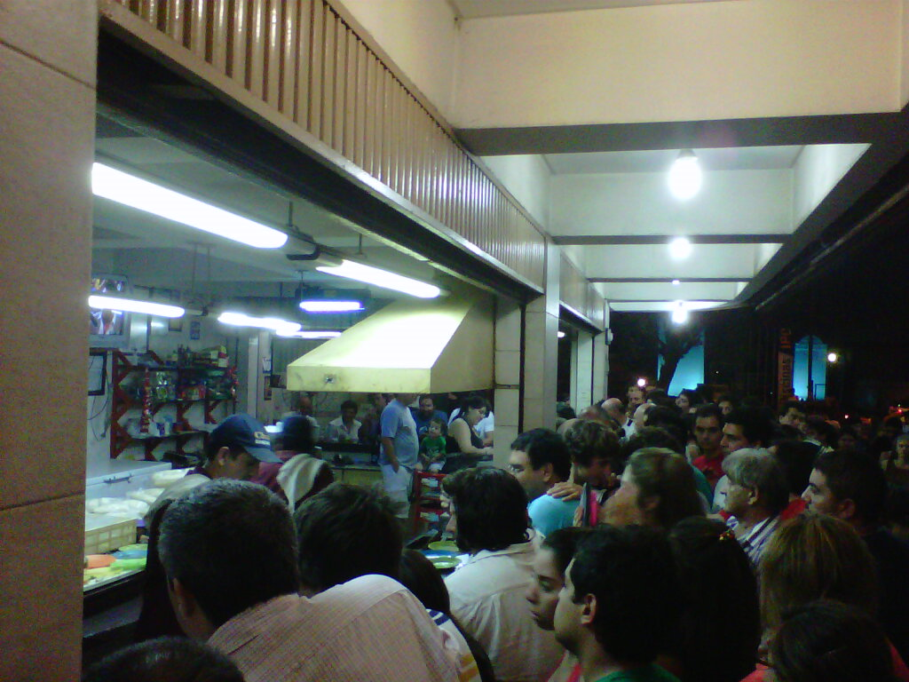
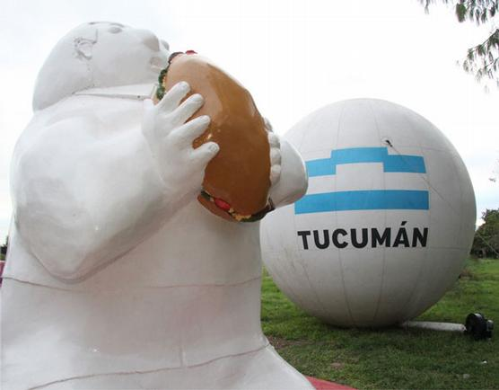
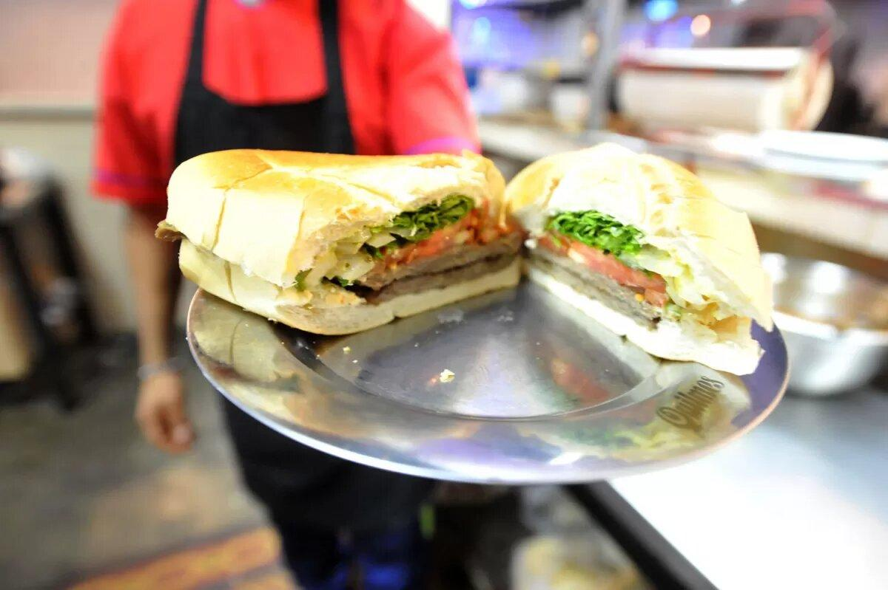

Historia del Sanguche de Milanesa
El sánguche de milanesa tucumano se erige como una auténtica joya de la gastronomía argentina, una creación que ha trascendido fronteras y conquistado los paladares más exigentes en suelo argentino y más allá. Su origen se remonta a 1972, cuando José Norberto, conocido como "Chacho", abrió un modesto quiosco en Yerba Buena, Tucumán. Desde entonces, este plato se ha convertido en un ícono culinario, no solo de la provincia, sino de toda Argentina. La meticulosa atención de Chacho a los detalles, desde el espesor de la milanesa hasta la frescura de los ingredientes, sentó las bases para una tradición gastronómica que perdura hasta nuestros días.
La milanesa, cuyo legado se remonta a la migración italiana a Argentina, encontró su hogar en Tucumán y se convirtió en el ingrediente estrella del sánguche de milanesa tucumano. Su historia se entrelaza con la de la provincia, fusionándose para crear un plato que refleja la identidad y la diversidad cultural de la región. A lo largo de los años, esta receta ha evolucionado, incorporando nuevos ingredientes y técnicas culinarias, pero siempre manteniendo su esencia tradicional.
El reconocimiento nacional llegó en el año 2000, cuando el sánguche de milanesa tucumano fue distinguido como el mejor plato en una fiesta gastronómica, consolidándose así como una leyenda culinaria. Desde entonces, la ciudad de Tucumán celebra cada año el Día Provincial del Sánguche de Milanesa, una festividad que resalta la importancia cultural y gastronómica de este manjar en la identidad de la provincia. Este reconocimiento no hace más que reafirmar la posición privilegiada que ocupa este plato en el corazón de los argentinos.

La experiencia de saborear un sánguche de milanesa tucumano va más allá de simplemente disfrutar de una comida; es un viaje sensorial que nos conecta con la historia y la tradición de Argentina. Desde los tradicionales bares hasta los modernos restaurantes, este plato es un símbolo de convivencia y celebración, uniendo a personas de todas las edades y clases sociales alrededor de una mesa. Es en estos momentos compartidos donde el sánguche de milanesa se convierte en un vínculo que une a la comunidad.

Además de su impacto cultural, el sánguche de milanesa tucumano también ha dejado una huella en el ámbito económico de la provincia. Eventos como la Expo Milanga y la celebración del Día Provincial del Sánguche de Milanesa no solo promueven la tradición culinaria, sino que también impulsan el turismo y el desarrollo local. Los emprendedores locales han sabido capitalizar el éxito de este plato, ofreciendo una amplia variedad de opciones que van desde las versiones clásicas hasta las más innovadoras.
En tiempos de incertidumbre, el sánguche de milanesa tucumano sigue siendo un faro de esperanza y tradición, un recordatorio de la resiliencia y la creatividad del pueblo argentino. En cada bocado, se saborea la historia y el orgullo de una nación que celebra su identidad a través de la comida. Este plato emblemático seguirá deleitando los paladares de generaciones futuras, asegurando su lugar en el Olimpo de la gastronomía argentina.
La difusión del sánguche de milanesa tucumano ha trascendido las fronteras de Argentina, capturando la atención de amantes de la gastronomía de todo el mundo. Plataformas digitales como TripAdvisor están repletas de reseñas elogiosas sobre este manjar, destacando su sabor excepcional y su importancia en la cultura culinaria argentina. Este reconocimiento internacional no solo enaltece la reputación del sánguche de milanesa tucumano, sino que también impulsa el turismo gastronómico en la región, atrayendo a visitantes ávidos de deleitarse con esta delicia culinaria. En conclusión, el sánguche de milanesa tucumano representa mucho más que un plato de comida; es un símbolo de identidad, tradición y pasión por la gastronomía argentina. Desde sus humildes inicios en un pequeño quiosco hasta su consagración como ícono nacional, este plato ha dejado una marca indeleble en la cultura y el paladar de todos los argentinos. Así, con cada mordisco, nos sumergimos en una historia de sabores y emociones que perdurarán por generaciones, llevando consigo el legado de aquellos que hicieron posible esta maravilla culinaria.